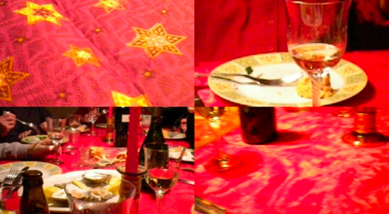
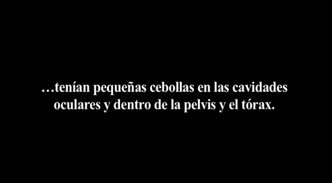

Vídeoinstalación con dos pantallas
Color // Sonido // 4'18''
Blanco y negro // sin sonido // 9'01''
El Convit, Centre Cívic Can Felipa, Barcelona, 2012
Leonardo, un homenaje del arte a la ciencia (CSIC, Madrid, 2015)
2012
celebración. (Del lat. celebratĭo, -ōnis).
1. f. Acción de celebrar.
2. f. Aplauso, aclamación.
Breve catálogo de motivos por los que celebrar.
En la primera pantalla, durante un breve espacio de tiempo, cada uno de los celebrantes tiene entre sus manos una pequeña cámara digital compacta con la que graba los aspectos que desea resaltar de dicha celebración. En la segunda pantalla, descubrimos la simbología de los alimentos que forman parte de dicha conmemoración.
Los celebrantes

